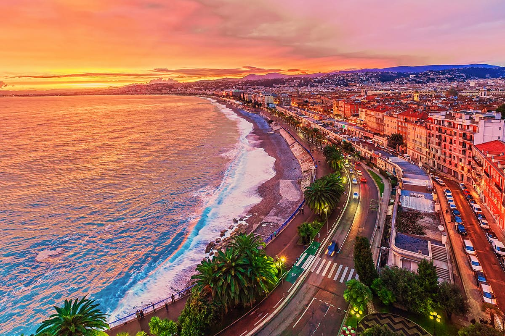

|
Nice is the seventh most populous urban area in France and the prefecture of the Alpes-Maritimes department. The metropolitan area of Nice extends beyond the administrative city limits, with a population of nearly 1 million on an area of 744 km2 (287 sq mi). Located in the French Riviera, on the south east coast of France on the Mediterranean Sea, at the foot of the Alps, Nice is the second-largest French city on the Mediterranean coast and the second-largest city in the Provence-Alpes-Côte d'Azur region after Marseille. Nice is approximately 13 kilometres (8.1 mi) from the principality of Monaco and 30 kilometres (19 mi) from the French-Italian border. Nice's airport serves as a gateway to the region. The city is nicknamed Nice la Belle (Nissa La Bella in Niçard), which means Nice the Beautiful, which is also the title of the unofficial anthem of Nice, written by Menica Rondelly in 1912. The area of today's Nice contains Terra Amata, an archaeological site which displays evidence of a very early use of fire 380,000 years ago. Around 350 BC, Greeks of Marseille founded a permanent settlement and called it Nikaia, after Nike, the goddess of victory. Through the ages, the town has changed hands many times. Its strategic location and port significantly contributed to its maritime strength. For centuries it was a dominion of Savoy, and was then part of France between 1792 and 1815, when it was returned to the Kingdom of Piedmont-Sardinia until its re-annexation by France in 1860. The natural environment of the Nice area and its mild Mediterranean climate came to the attention of the English upper classes in the second half of the 18th century, when an increasing number of aristocratic families took to spending their winters there. In 1931 following its refurbishment the city's main seaside promenade, the Promenade des Anglais ("Walkway of the English") was inaugurated by Prince Arthur, Duke of Connaught, and owes its name to visitors to the resort. These included Queen Victoria along with her son Edward VII who spent winters there, and Nice born Henry Cavendish, who discovered hydrogen. |
 |